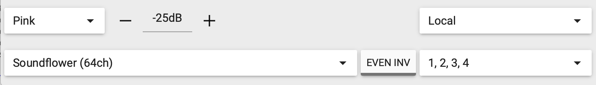
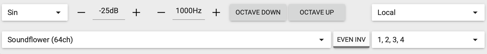
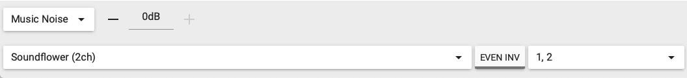
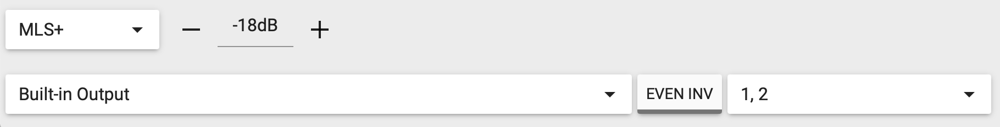

O painel direito do OSM faz duas coisas: gera o sinal de teste que você manda para o sistema, e lista as medições ativas. Esta página cobre as duas.
O gerador interno (Generator)
No alto do painel direito tem um interruptor com a palavra Generator e um valor em dB ao lado (ex: -25dB). Quando você liga esse interruptor, o OSM gera um sinal de teste e manda pela saída de áudio do computador (ou pela interface, se você escolheu uma). Esse sinal precisa chegar na entrada da mesa, ser amplificado, e tocar pela caixa — aí o microfone captura, e o OSM compara o que saiu com o que voltou.
Sem o gerador ligado, o OSM só "escuta" — não há referência para função de transferência. Por isso Magnitude e Phase só fazem sentido com Generator ligado (ou com um sinal externo entrando pela entrada de referência R:).
Os quatro tipos de sinal
Clicando no nome do sinal (ex: Pink) abre um dropdown com os quatro tipos disponíveis. Cada um tem um uso diferente:




Para o trabalho de alinhamento que cobrimos no curso, Pink noise é o que você vai usar em 90% das medições — ele excita todas as frequências de uma vez e dá uma boa Magnitude/Phase rapidamente. Use Sin para caçar uma microfonia específica. Use MLS+ quando precisar do gráfico Impulse para medir delay.
Por onde o sinal sai
Lembre que o gerador só funciona se a saída de áudio do programa estiver ligada na entrada da mesa. Duas formas comuns:
- Cabo direto: saída de fone do notebook (P2) → entrada P2 ou RCA da mesa.
- Pela interface USB: output da interface (P10 ou XLR) → entrada de canal da mesa. Mais limpo, e o mesmo cabo serve para devolver a referência (canal R:) para o OSM.
O dispositivo de saída é escolhido na barra inferior — cuidado: se você escolher Built-in Output e seu notebook estiver tocando música pelo Spotify ao mesmo tempo, a música vai junto com o sinal de teste. Mude a saída do sistema operacional para outro dispositivo enquanto mede.
O gerador começa no nível que você deixou da última vez. Antes de ligar, confira: nível em -25 dB ou menos, fader da mesa em zero, e amplificador no volume normal. Depois liga o generator e sobe o nível devagar olhando o LED da mesa. Pink noise no nível errado queima tweeter.
O painel de medições (Measurements)
Abaixo do Generator, o painel lista as medições ativas. Em modo Single, geralmente tem uma só:

Anatomia de uma entrada de medição
- Checkbox colorido A cor representa essa medição em todos os gráficos. Desmarcar oculta a curva (sem deletar).
- Nome (clicável) Clica no nome para renomear. Use nomes descritivos: "Mesa 1 metro", "Fundo igreja", "Pulpito". Não deixe tudo como Measurement, Measurement 1, Measurement 2 — você vai se perder.
- Indicadores de nível As barrinhas verdes abaixo do nome mostram o nível atual entrando pelos canais M e R. Devem estar verdes e nem perto do final. Se ficarem cheias ou vermelhas, o sinal está clipando.
- Ícone duplicar (dois quadrados) Cria uma cópia da medição. Útil para "congelar" o estado atual antes de mudar algo na mesa.
- Ícone lixeira Remove a medição. Não tem desfazer — se for stored (medição congelada), pense duas vezes.
Criar uma nova medição
Há três jeitos de criar:
- Menu File → Add measurement (atalho ⌘ A no macOS, Ctrl+A no Windows). Adiciona uma medição vazia que você configura nos canais M e R.
- Botão duplicar de uma medição existente — copia configurações e cria a nova ao lado.
- Importar de arquivo: File → Import. O OSM aceita arquivos .csv com curva de magnitude. Veja por exemplo a medição "Melodie.csv" que apareceu na Página 3.
Cada medição usa canais independentes de M e R, então você pode rodar 2, 3, 4 microfones diferentes na mesma sessão (interface multicanal) e ver todos juntos. Em alinhamento de igreja é comum usar 1 medição, mas pode ser útil ter 2 (uma na mesa, outra no fundo) para comparar.
O essencial pra reter desta página
- O Generator é o sinal de teste — precisa estar ligado para função de transferência funcionar.
- Pink noise é o sinal padrão para alinhamento. Sin para caça de microfonia. MLS+ quando precisa medir Impulse.
- Comece sempre com nível baixo (-25 dB) e suba devagar para não queimar tweeter.
- Cada medição tem checkbox de cor, nome editável, medidores de nível, duplicar e deletar.
- Renomeie as medições com nomes descritivos. Não deixe como "Measurement 1, 2, 3".